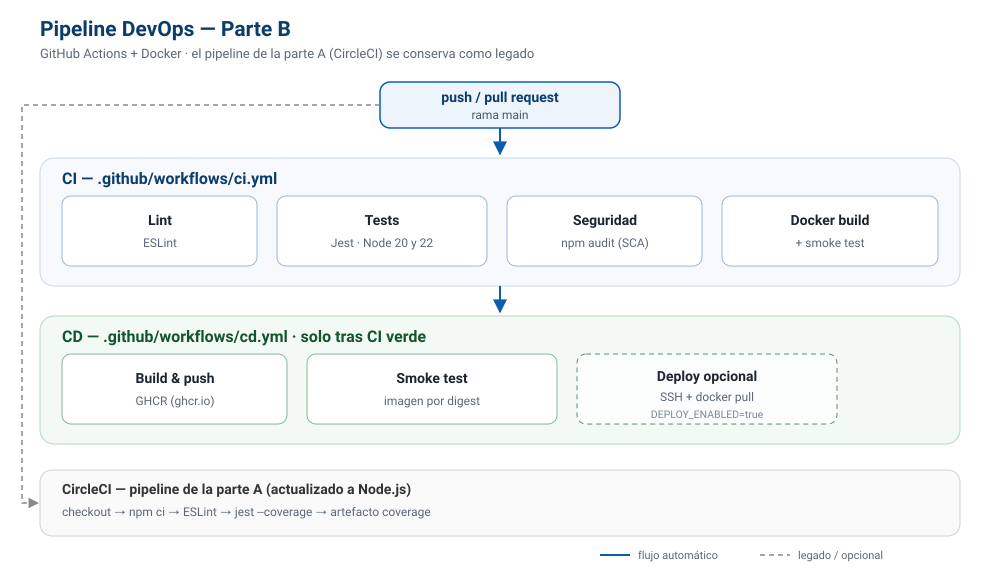

Memoria de trabajo: implantación de un pipeline DevOps
| Campo | Valor |
|---|---|
| Asignatura | [Nombre de la asignatura] |
| Módulo | 2 — Integración y entrega continuas |
| Alumno | [Nombre y apellidos] |
| Fecha | 23 de noviembre de 2026 |
| Repositorio | https://github.com/ROL1324/pipeline-devops |
Resumen ejecutivo
Esta memoria documenta la construcción de dos pipelines DevOps sobre una
misma aplicación de saludos. En la parte A se monta un proceso de
integración continua con CircleCI a partir del material entregado en el
campus: una aplicación Python, tres tests con pytest y un fichero de
configuración de CircleCI. En la parte B el proyecto evoluciona a una
aplicación Node.js/Express, se publica en GitHub y se implanta un
pipeline completo con GitHub Actions: integración continua con lint,
pruebas unitarias, de integración y basadas en propiedades, cobertura,
auditorías de seguridad y análisis estático; y entrega continua con
Docker, publicación en GitHub Container Registry (GHCR) y un smoke
test sobre la imagen publicada. El resultado pasa de 3 tests y un pipeline
solo de CI a 27 tests, ocho tipos de verificación y un CD que únicamente se
ejecuta después de que el CI haya terminado correctamente.
1. Introducción y objetivos
1.1 Contexto
La integración continua (CI) consiste en integrar los cambios en la rama principal de forma frecuente y verificar automáticamente cada integración: compilar, analizar el código y ejecutar los tests. La entrega continua (CD) lleva esa base un paso más allá: si el CI es correcto, el artefacto se publica y se despliega de forma automatizada y repetible.
El objetivo de la actividad es entender un pipeline como una cadena de responsabilidades: cada etapa solo debe ejecutarse si la anterior ha pasado, y todo el proceso debe poder reproducirse sin intervención manual.
1.2 Objetivos
- Implantar un primer pipeline de CI con CircleCI a partir del material del campus (parte A).
- Modificar el pipeline y la aplicación, cambiando de lenguaje y ampliando la estrategia de pruebas (parte B).
- Publicar el código en GitHub y usar GitHub Actions para CI y CD.
- Integrar Docker como mecanismo de entrega y publicar imágenes versionadas.
- Incorporar tipos de prueba adicionales: integración, propiedades, cobertura, análisis estático, auditoría de dependencias y smoke test.
- Documentar las decisiones, los problemas encontrados y las mejoras.
1.3 Metodología
Se trabaja con dos commits principales y dos etiquetas:
| Etiqueta | Contenido |
|---|---|
parte-a |
Aplicación Python, tests con pytest y pipeline de CircleCI |
parte-b |
Aplicación Node.js, pirámide de pruebas, GitHub Actions CI/CD y Docker |
El repositorio conserva la versión Python en legacy/parte-a/ y la
configuración original del zip en docs/reference/, de modo que la evolución
queda trazable.

2. Parte A — Primer pipeline con CircleCI
2.1 Material de partida
El zip del campus contiene los siguientes ficheros:
| Archivo | Contenido |
|---|---|
saludar.py |
Tres funciones que devuelven saludos y un print aleatorio |
test_saludar.py |
Tres tests unitarios con pytest |
requirements.txt |
Dependencias de Python |
Dockerfile |
Imagen Alpine que instala Python |
circleci/config.yml |
Configuración del pipeline en CircleCI |
2.2 Análisis del código y de los tests
La aplicación tiene una parte pura y fácil de probar: saludo1(),
saludo2() y saludo3() devuelven cadenas constantes. Sin embargo, el
código mezcla la lógica con la ejecución: al importar el módulo se elige un
número aleatorio y se imprime un saludo. Esa mezcla tiene consecuencias:
- Los tests importan el módulo y, como efecto colateral, ejecutan el
print. - La selección aleatoria y la rama
elseno se prueban. - No hay una interfaz HTTP ni un punto de entrada claro.
- No se mide la cobertura.
Los tres tests existentes son correctos y verifican el contrato de las
funciones, pero solo cubren la parte más sencilla. El Dockerfile tampoco
ejecuta la aplicación: instala Python y copia los ficheros, pero no define
CMD, por lo que no constituye una entrega funcional.
2.3 Problemas detectados en la configuración
La configuración entregada no es ejecutable hoy sin cambios. La siguiente tabla resume los problemas y la solución aplicada:
| Problema | Consecuencia | Solución |
|---|---|---|
version: 2 |
Versión antigua de CircleCI | Migrar a version: 2.1 |
Imagen circleci/python:3.7 |
Imagen retirada; el job no arranca | Usar cimg/python:3.12 |
pytest 6.2.2 y flake8 3.9.0 |
Versiones incompatibles con Python actual | Actualizar a pytest 8.x y flake8 7.x |
| Paso de Docker comentado | El pipeline no construye ni publica nada | Asumir que la parte A es solo CI |
| Sin caché | Cada ejecución reinstala todo | Añadir caché en la parte B |
| Sin cobertura ni artefactos | No hay evidencia medible de calidad | Añadir cobertura en la parte B |
source en lugar de . |
Menos portable entre shells | Usar . venv/bin/activate |
La configuración original se conserva íntegra en
docs/reference/config-original-circleci.yml; la versión corregida y
ejecutable está en legacy/parte-a/circleci-config-parte-a.yml.
2.4 Pipeline implementado
El pipeline de la parte A tiene un único job build con tres pasos:
version: 2.1
jobs:
build:
docker:
- image: cimg/python:3.12
steps:
- checkout
- run:
name: Instalar dependencias
command: |
python3 -m venv venv
. venv/bin/activate
pip install --upgrade pip
pip install -r requirements.txt
- run:
name: Ejecutar flake8 y pytest
command: |
. venv/bin/activate
flake8 --exclude=venv* --statistics
pytest -v
workflows:
ci-parte-a:
jobs:
- build
La secuencia es deliberadamente sencilla: obtener el código, preparar el
entorno y ejecutar lint y tests. El pipeline falla si flake8 encuentra
algún aviso o si un test no pasa.
2.5 Puesta en marcha y evidencias
El proceso seguido fue:
- Crear el repositorio en GitHub y subir los ficheros.
- Entrar en CircleCI con la cuenta de GitHub.
- Seleccionar Set Up Project → Use existing config para que CircleCI
usara el
.circleci/config.ymldel repositorio. - Hacer un commit y observar la ejecución del workflow
ci-parte-a.
En local, la misma secuencia produce:
flake8: sin avisos.pytest: 3 tests superados.


2.6 Conclusiones de la parte A
La parte A demuestra el concepto de CI con muy poca infraestructura, pero también deja visibles sus límites: un solo job, tests escasos, sin cobertura, sin construcción de imagen y sin entrega. Esos límites son precisamente el punto de partida de la parte B.
3. Parte B — Segundo pipeline: GitHub Actions y Docker
3.1 Decisiones de diseño
Se reescribe la aplicación en Node.js con Express por tres motivos:
- El enunciado sugiere cambiar de lenguaje y así se demuestra una migración real, no solo un cambio de fichero YAML.
- Una API HTTP permite pruebas de integración reales con
supertest, algo que la aplicación Python original no ofrecía. - Express genera una imagen Docker pequeña y un smoke test muy claro
mediante el endpoint
/health.
La lógica de negocio se separa de la infraestructura: greetings.js contiene
las reglas puras, app.js construye la aplicación Express y server.js es el
único punto que abre un puerto. Esta separación permite probar la app sin
levantar un servidor real.
3.2 Nueva aplicación
| Método | Ruta | Ejemplo | Respuesta |
|---|---|---|---|
| GET | / |
/ |
{"message":"Hola, mundo!"} |
| GET | /health |
/health |
{"status":"ok","uptime":1.23} |
| GET | /languages |
/languages |
{"languages":["es","en","fr"]} |
| GET | /greet/:name |
/greet/Ana?lang=en |
{"message":"Hello, Ana!"} |
La aplicación valida el nombre (letras Unicode, espacios, apóstrofos y
guiones, hasta 50 caracteres) y el idioma (es, en, fr). Los errores de
validación devuelven 400 y las rutas desconocidas 404.
Estructura del código:
src/
├── app.js # Factoría de la aplicación Express
├── greetings.js # Lógica de negocio pura
└── server.js # Arranque HTTP y apagado ordenado (SIGINT/SIGTERM)
3.3 Estrategia de pruebas
Se aplica una pirámide de pruebas: muchas pruebas rápidas y aisladas en la base, menos pruebas de integración y un smoke test sobre el contenedor en la cima.
| Tipo | Herramienta | Qué comprueba | Nº |
|---|---|---|---|
| Unitarias | Jest | Saludos, validación de nombres e idiomas | 17 |
| Integración | Jest + Supertest | Rutas HTTP, códigos 200/400/404 y cuerpo de las respuestas | 8 |
| Basadas en propiedades | fast-check | Invariantes sobre cientos de nombres e idiomas generados | 2 |
| Cobertura | Jest | Umbral mínimo de 80 % en ramas y 85 % en líneas/funciones | — |
| Estática | ESLint | Errores, variables sin usar y malas prácticas | — |
| Dependencias (SCA) | npm audit |
Vulnerabilidades conocidas en dependencias de producción | — |
| Seguridad estática (SAST) | CodeQL | Patrones inseguros en el código | — |
| Contenedor | Docker + curl |
La imagen arranca y /health responde |
— |
Total: 27 tests. La cobertura obtenida es del 97,05 % en sentencias y
líneas, 92,3 % en ramas y 100 % en funciones. La única rama sin cubrir
es la respuesta 500, que requiere un error inesperado no reproducible con
la lógica actual; se mantiene como red de seguridad.
Las pruebas basadas en propiedades merecen una explicación: en lugar de
escribir ejemplos concretos, se declara una propiedad que debe cumplirse
siempre y fast-check genera entradas aleatorias para intentar falsearla.
Por ejemplo:
- Para cualquier nombre válido,
greet(name)debe empezar por"Hola, ", terminar en"!"e incluir el nombre. - Para cualquier idioma fuera del catálogo,
greetdebe lanzarRangeError.
Esto complementa a los tests de ejemplo: encuentra casos límite que no se habrían escrito a mano.
Ejemplo de prueba de integración:
test('GET /greet/Ana?lang=en saluda en inglés', async () => {
const res = await request(app).get('/greet/Ana?lang=en').expect(200);
expect(res.body.message).toBe('Hello, Ana!');
});
3.4 Repositorio en GitHub
El repositorio se organiza con main como rama protegida, dos etiquetas
(parte-a y parte-b) y workflows separados por responsabilidad. La
protección de main exige que los checks del CI estén en verde antes de
fusionar un pull request. Las capturas B1 y B7 documentan la estructura y la
configuración de la rama.

3.5 Integración continua con GitHub Actions
.github/workflows/ci.yml se ejecuta en cada push a main y en cada pull
request. Incluye cuatro jobs:
| Job | Qué hace | Detalle |
|---|---|---|
lint |
ESLint sobre todo el proyecto | Falla ante cualquier error |
test |
Jest con cobertura | Matriz Node 20 y 22; umbral de cobertura |
security |
npm audit --omit=dev |
Falla con vulnerabilidades altas o críticas |
docker-build |
Construcción de la imagen y smoke test | Depende de lint, test y security |
Decisiones técnicas relevantes:
- Matriz de versiones: el mismo código se prueba en Node 20 (LTS) y Node 22, lo que detecta incompatibilidades entre versiones.
- Caché de npm:
actions/setup-nodeconcache: npmevita descargar dependencias en cada ejecución. - Caché de Docker:
cache-from/cache-to: type=ghareutiliza capas entre ejecuciones y acelera la construcción. - Concurrencia: si se empujan varios commits seguidos al mismo ref, la
ejecución anterior se cancela (
cancel-in-progress: true). - Permisos mínimos: el workflow solo necesita
contents: read. - Artefacto de cobertura: el informe
coverage/se publica como artefacto descargable durante 7 días.
El job docker-build construye la imagen antes de que el CD publique
nada. Así se detecta un Dockerfile roto en el CI y no en el momento del
despliegue.


3.6 Entrega continua con Docker
.github/workflows/cd.yml no se dispara con cada push: usa el evento
workflow_run para ejecutarse solo cuando el workflow CI ha terminado con
éxito sobre main. También admite tags v* y ejecución manual.
El job publish:
- Hace checkout del commit exacto que validó el CI
(
github.event.workflow_run.head_sha). - Construye la imagen de producción.
- Se autentica en GHCR con el
GITHUB_TOKENefímero del workflow. - Publica la imagen con tags de rama, tag, SHA y
latest. - Exporta el digest inmutable (
sha256:...).
El job smoke-test descarga la imagen publicada por digest, la arranca y
comprueba que /health responde. Se prueba exactamente el artefacto que se
ha publicado, no una reconstrucción local. El job deploy es opcional y solo
se activa con la variable DEPLOY_ENABLED=true; despliega por SSH en un
servidor con Docker y la misma imagen por digest.
El Dockerfile es multi-stage:
FROM node:20-alpine AS deps
WORKDIR /app
COPY package.json package-lock.json ./
RUN npm ci --omit=dev
FROM node:20-alpine
ENV NODE_ENV=production
WORKDIR /app
COPY --from=deps /app/node_modules ./node_modules
COPY package.json ./
COPY src ./src
USER node
EXPOSE 3000
HEALTHCHECK CMD wget -qO- http://127.0.0.1:3000/health || exit 1
CMD ["node", "src/server.js"]
Ventajas: la imagen final no contiene devDependencies, tests ni documentación;
se ejecuta como usuario sin privilegios; incluye un HEALTHCHECK que Docker
y el orquestador pueden usar; y el package-lock.json garantiza instalaciones
reproducibles con npm ci.


3.7 Seguridad del pipeline
| Medida | Para qué |
|---|---|
permissions mínimos por workflow y job |
Limitar el alcance del GITHUB_TOKEN |
GITHUB_TOKEN en lugar de credenciales fijas |
Token efímero y rotado por GitHub |
| Sin secretos en el repositorio | Evitar filtraciones; .gitignore y .dockerignore |
npm audit --omit=dev |
Detectar vulnerabilidades en dependencias de producción |
| CodeQL | Análisis estático de patrones inseguros |
| Contenedor non-root | Reducir el impacto de una vulnerabilidad en la app |
| Imagen Alpine mínima | Menos superficie de ataque |
Protección de main |
Evitar fusiones sin CI en verde |
Entorno production en el deploy |
Permite exigir revisión manual antes de desplegar |
Como mejora futura, en un entorno real conviene fijar las actions por SHA en lugar de por etiqueta, y usar pull requests de Dependabot para mantener las dependencias actualizadas.
3.8 Comparativa CircleCI y GitHub Actions
| Criterio | CircleCI | GitHub Actions |
|---|---|---|
| Integración con GitHub | Servicio externo con OAuth | Nativa |
| Configuración | .circleci/config.yml |
.github/workflows/*.yml |
| Ejecutores | Docker, máquina y macOS | Ubuntu, Windows, macOS y contenedores |
| Reutilización | Orbs | Actions del Marketplace |
| Matriz de versiones | matrix en la configuración |
strategy.matrix |
| Secretos | Variables y contextos | Secrets y environments |
| Registro de imágenes | Credenciales de registro externo | GHCR con GITHUB_TOKEN |
| Coste | Plan gratuito con límites | Minutos gratuitos según plan; GHCR incluido |
| Curva de aprendizaje | Media | Baja si el código ya está en GitHub |
GitHub Actions simplifica el proyecto porque el código, los issues, los pull requests, los checks y el registro de imágenes viven en el mismo sitio. CircleCI sigue siendo una opción sólida y su configuración es algo más explícita, pero obliga a gestionar una integración adicional y credenciales de registro por separado.
3.9 Mejoras respecto a la parte A
- Cambio de lenguaje y de arquitectura: de un script Python con
printa una API Express con separación entre lógica, aplicación y servidor. - De 3 a 27 tests, con pruebas unitarias, de integración y basadas en propiedades.
- Cobertura medida y exigida: umbral que rompe el pipeline si baja.
- Lint moderno y reproducible con ESLint y configuración versionada.
- Auditoría de dependencias (SCA) integrada en el CI.
- Análisis estático de seguridad (SAST) con CodeQL.
- Matriz de Node 20 y 22 para detectar incompatibilidades.
- Caché de npm y de Docker para reducir tiempos.
- Cancelación de ejecuciones obsoletas y permisos mínimos.
- Dockerfile multi-stage, non-root y con healthcheck, inexistente en la parte A.
- CD real: publicación en GHCR, referencia por digest y smoke test de la imagen publicada.
- CD condicionado al CI: no se publica nada si el CI no está en verde
sobre
main. - Despliegue opcional por SSH con la misma imagen inmutable.
- Trazabilidad: etiquetas
parte-a/parte-b, configuración original conservada y memoria versionada junto al código.
3.10 Evidencias adicionales


4. Conclusiones
La actividad muestra que un pipeline no es solo un fichero YAML: es una cadena de garantías. La parte A permitió comprobar lo sencillo que resulta ejecutar tests en la nube con CircleCI, pero también que un pipeline sin cobertura, sin imagen y sin entrega se queda a medio camino. La parte B convierte ese esqueleto en un proceso completo:
- Calidad medible: 27 tests, cobertura con umbral y análisis estático.
- Seguridad integrada: auditoría de dependencias, CodeQL, permisos mínimos y contenedor sin privilegios.
- Entrega reproducible: imagen inmutable publicada en GHCR y probada antes de cualquier despliegue.
- Automatización condicionada: el CD solo avanza si el CI ha pasado.
El aprendizaje principal es que la automatización debe ser fallar pronto y fallar claro: es mejor detectar un Dockerfile roto en el CI que en el servidor de producción, y es mejor que un umbral de cobertura rompa el pipeline a que la calidad se degrade en silencio.
Como líneas de trabajo futuras: separar entornos de staging y producción,
usar Infrastructure as Code (Terraform), añadir Dependabot, firmar imágenes
con cosign, desplegar en Kubernetes y añadir observabilidad (métricas y
logs centralizados).
5. Referencias
- CircleCI. Configuration reference. https://circleci.com/docs/configuration-reference/
- CircleCI. Convenience images. https://circleci.com/developer/images
- GitHub. GitHub Actions documentation. https://docs.github.com/en/actions
- GitHub. Events that trigger workflows: workflow_run. https://docs.github.com/en/actions/using-workflows/events-that-trigger-workflows#workflow_run
- GitHub. Working with the Container registry. https://docs.github.com/en/packages/working-with-a-github-packages-registry/working-with-the-container-registry
- Docker. Multi-stage builds. https://docs.docker.com/build/building/multi-stage/
- Docker. build-push-action. https://github.com/docker/build-push-action
- Docker. metadata-action. https://github.com/docker/metadata-action
- GitHub. CodeQL. https://codeql.github.com/
- Jest. Documentation. https://jestjs.io/docs/getting-started
- Supertest. Documentation. https://github.com/ladjs/supertest
- fast-check. Documentation. https://fast-check.dev/
- ESLint. Documentation. https://eslint.org/docs/latest/
Anexo A — Comandos utilizados
Comprobaciones locales
npm ci
npm run lint
npm run test:coverage
npm run security
npm run verify
npm start
Git y GitHub
git init -b main
git add -A
git commit -m "Parte A: pipeline de CI con CircleCI"
git tag -a parte-a -m "Parte A: CircleCI"
git commit -m "Parte B: Node.js, GitHub Actions y Docker"
git tag -a parte-b -m "Parte B: CI/CD completo"
git remote add origin https://github.com/ROL1324/pipeline-devops.git
git push -u origin main --tags
Reproducir la parte A en CircleCI
git branch parte-a-demo parte-a
git push origin parte-a-demo
# Conectar el proyecto en CircleCI y capturar la ejecución
git push origin --delete parte-a-demo
git branch -d parte-a-demo
Publicar una release
git tag -a v2.0.0 -m "Parte B: CI/CD con GitHub Actions"
git push origin v2.0.0
Docker
docker build -t pipeline-devops .
docker run --rm -p 3000:3000 pipeline-devops
docker compose up --build
Generar la memoria imprimible
npm run docs:build
open docs/memoria.html # Imprimir → Guardar como PDF
Anexo B — Checklist de capturas
| Figura | Archivo | Estado |
|---|---|---|
| A1 | capturas/a1-repo-github.png |
Pendiente |
| A2 | capturas/a2-circleci-setup.png |
Pendiente |
| A3 | capturas/a3-pipeline-verde.png |
Pendiente |
| A4 | capturas/a4-detalle-tests.png |
Pendiente |
| A5 | capturas/a5-log-pytest.png |
Pendiente |
| B1 | capturas/b1-estructura-repo.png |
Pendiente |
| B2 | capturas/b2-actions-ci.png |
Pendiente |
| B3 | capturas/b3-cobertura.png |
Pendiente |
| B4 | capturas/b4-codeql.png |
Pendiente |
| B5 | capturas/b5-cd-smoke.png |
Pendiente |
| B6 | capturas/b6-ghcr-package.png |
Pendiente |
| B7 | capturas/b7-branch-protection.png |
Opcional |
| B8 | capturas/b8-pr-checks.png |
Opcional |
Anexo C — Guion de defensa
1. ¿Qué es CI y qué es CD?
CI es integrar cambios con frecuencia y verificar cada integración de forma
automática (lint, tests, build). CD automatiza la publicación y el despliegue
del artefacto validado. En el proyecto, ci.yml es CI y cd.yml es CD.
2. ¿Por qué dos pipelines? La parte A exigía CircleCI con el material del campus. La parte B pedía cambiar la aplicación, usar GitHub y GitHub Actions. Conservar ambos permite comparar herramientas y demostrar la migración sin perder trazabilidad.
3. ¿Qué tipos de prueba has integrado? Unitarias, de integración, basadas en propiedades, cobertura, lint, auditoría de dependencias, análisis estático de seguridad y smoke test del contenedor.
4. ¿Qué aporta el testing basado en propiedades? Genera entradas automáticamente y comprueba invariantes. Complementa los ejemplos escritos a mano y explora casos límite que no se habrían previsto.
5. ¿Cómo evitas desplegar código roto?
El CD usa workflow_run: solo se ejecuta si el workflow CI terminó con éxito
sobre main. Además, el smoke test se ejecuta sobre la imagen publicada por
digest antes del despliegue opcional.
6. ¿Por qué publicar por digest y no solo por tag?
Un tag puede moverse; un digest sha256:... identifica de forma inmutable el
contenido exacto de la imagen. El smoke test y el despliegue usan el mismo
digest.
7. ¿Cómo proteges los secretos?
No hay secretos en el código. El CD usa el GITHUB_TOKEN efímero para GHCR y,
si se activa el despliegue, secretos del repositorio y un entorno
production que puede exigir aprobación.
8. ¿Qué ventaja tiene la matriz de Node 20 y 22? Prueba el mismo código en dos versiones del runtime y detecta APIs o comportamientos incompatibles antes de que lleguen a producción.
9. ¿Qué harías para mejorar el pipeline?
Añadir staging, Dependabot, firma de imágenes con cosign, análisis de
secretos, despliegue en Kubernetes y observabilidad.
10. ¿Qué has aprendido de la parte A a la parte B? Que la CI sin entrega se queda corta y que la calidad debe medirse. Pasar de 3 tests a 27 y de un pipeline solo de CI a un CI/CD condicionado cambia por completo la confianza en cada cambio.